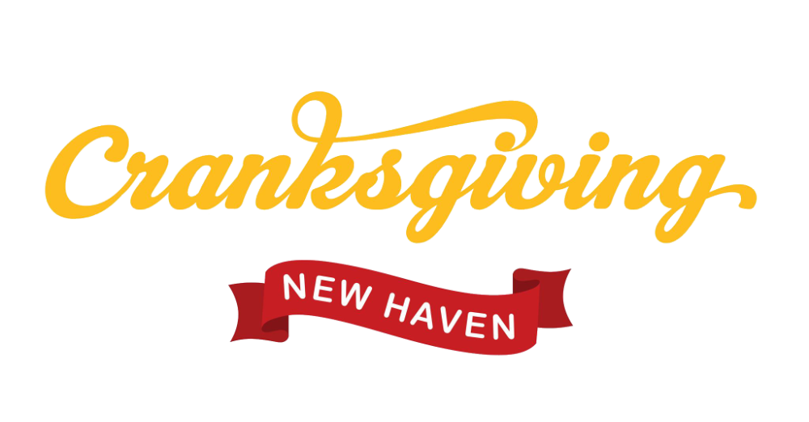

Join us for Cranksgiving — an annual food drive on two wheels!
Where: New Haven Green
When: Sun Nov 23rd, 11am
This cranksgiving will be a team-based bike ride/food-drive to pick up and donate non-perishables to local soup kitchens!
We will meet at the New Haven Green at 11 am. Riders will be split up into teams, and then we will take various routes to local grocery stores to pick up food, and then drop it off at Downtown Evening Soup Kitchen and Community Soup Kitchen. This event is FREE, but you’ll need 30-$40$ to purchase food.
All you need is:
Please join the Signal group so you can get push notifications about the event, any important information will also be published to the website. Joining the signal group will also give us a good idea for the turnout and it will help us out a lot with organizing.
Cranksgiving is a national event that occurs in over 100 cities across the United States and Canada. Visit Cranksgiving to learn more. The ride The easiest way to stick to the planned route is to group up and follow someone with a bike computer and/or phone mount.
A link will be provided which can be opened on mobile devices/bike computers and a cue sheet will also be available. Routes will be provided publicly before the event.
Route link, cue sheets, and shopping stops will be published the evening before the ride. Each group will have one leader with the route.
Select your team color to show the matching checklist.
Checklist tip: Check items off as you shop.
Checklist tip: Check items off as you shop.
Checklist tip: Check items off as you shop.
Checklist tip: Check items off as you shop.
